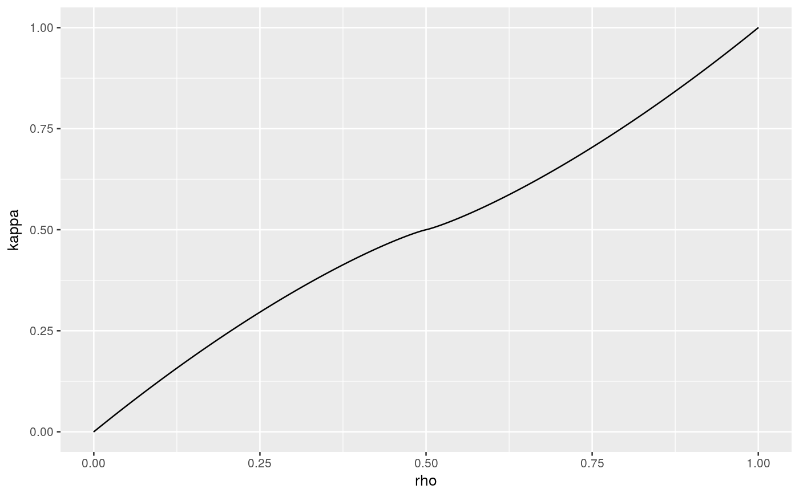

leigh produces a table and lookup functions for Leigh's curve
(see accompanying vignette for definition).
leigh(N = 1000)
| N | number of intermediate points; size of resulting table |
|---|
The output of leigh is a list of six elements:
table: a table of function values with N elements
dtable: a table of function values with N elements for the derivative
lkup_rho: a corresponding lookup function for rho in terms of kappa
lkup_kappa: a corresponding lookup function for kappa in terms of rho
lkup_drho_dkappa: a corresponding lookup function for the partial derivative of rho in terms of kappa
lkup_dkappa_drho: a corresponding lookup function for the partial derivative of kappa in terms of rho
Package: symconivol
L <- leigh() ggplot(L$tab, aes(x=rho,y=kappa)) + geom_line()x <- (0:10)/10 matrix(c(x, L$lkup_rho(x) ),11,2)#> [,1] [,2] #> [1,] 0.0 -1.259628e-06 #> [2,] 0.1 7.762827e-02 #> [3,] 0.2 1.618063e-01 #> [4,] 0.3 2.538881e-01 #> [5,] 0.4 3.598310e-01 #> [6,] 0.5 4.999999e-01 #> [7,] 0.6 6.401690e-01 #> [8,] 0.7 7.461119e-01 #> [9,] 0.8 8.381937e-01 #> [10,] 0.9 9.223717e-01 #> [11,] 1.0 1.000001e+00matrix(c(x, L$lkup_kappa(x) ),11,2)#> [,1] [,2] #> [1,] 0.0 1.740784e-06 #> [2,] 0.1 1.277354e-01 #> [3,] 0.2 2.430591e-01 #> [4,] 0.3 3.459488e-01 #> [5,] 0.4 4.331761e-01 #> [6,] 0.5 5.000001e-01 #> [7,] 0.6 5.668239e-01 #> [8,] 0.7 6.540512e-01 #> [9,] 0.8 7.569409e-01 #> [10,] 0.9 8.722646e-01 #> [11,] 1.0 9.999983e-01